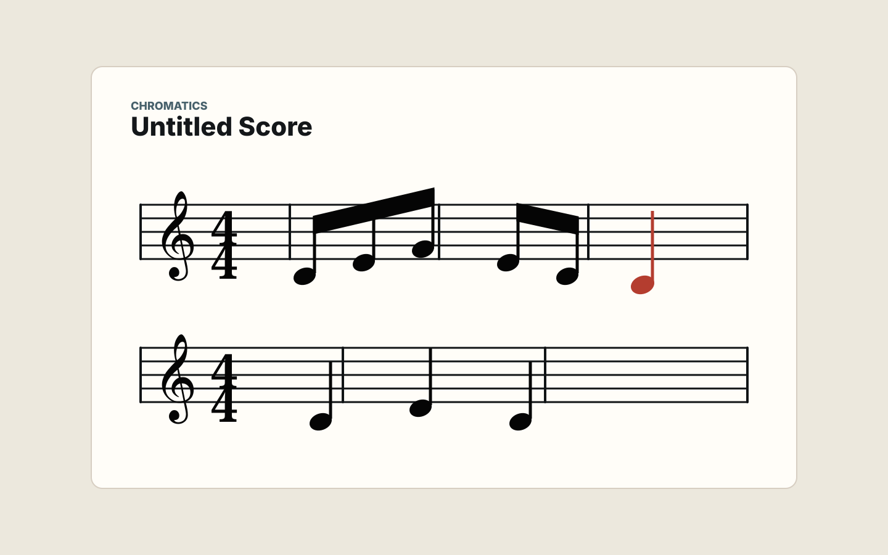

Clef & Staff
악보를 보는 사람에게 공연 정보를
악보를 보며 연습하는 사용자는 실제 공연을 들을 가능성이 높은 관객입니다. Clef & Staff 안에서는 악기, 레퍼토리, 연습 맥락을 해치지 않는 배너 공간에 공연·연주회 정보를 노출합니다.

Concert Banner Network
in C는 Clef & Staff와 Chromatics 같은 음악앱의 배너 공간을 활용해 공연·연주회 정보를 푸시하는 홍보 시스템입니다. 앱을 쓰는 사용자의 음악적 맥락을 바탕으로 더 연관성 높은 관객에게 공연 소식을 전합니다.
Services
Clef & Staff
악보를 보며 연습하는 사용자는 실제 공연을 들을 가능성이 높은 관객입니다. Clef & Staff 안에서는 악기, 레퍼토리, 연습 맥락을 해치지 않는 배너 공간에 공연·연주회 정보를 노출합니다.
Chromatics
사보와 편곡을 하는 사용자는 레퍼토리, 악기 편성, 창작자 네트워크와 연결되어 있습니다. Chromatics에서는 작업 흐름을 방해하지 않는 자리에서 연관 공연과 연주회 정보를 배너로 소개합니다.

Counterpoint
Counterpoint는 PDF, JPG, PNG 악보를 편집 가능한 MusicXML 초안으로 변환하는 실험입니다. 변환 결과는 검수 리포트와 함께 내려받고, 이후 Chromatics에서 수정하는 흐름으로 확장합니다.
Concert Push
in C의 공연·연주회 광고는 불특정 다수에게 뿌리는 배너가 아니라, 앱을 쓰는 사용자의 음악적 관심, 악기, 레퍼토리, 필요할 경우 지역 단서를 기준으로 노출됩니다. 유료 노출은 sponsored 또는 promoted로 명확히 표시합니다.